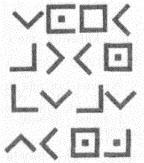

46. BÖLÜM
Pek çoklarının dünyanın en güzeli olduğunu söylediği odayı barındırmasına rağmen, Kongre Kütüphanesi’nin nefes kesen ihtişamı, zengin koleksiyonundan daha az bilinir. Sekiz yüz kilometreden uzun -Washington D.C.’den Boston’a uzanacak kadar- raflarıyla dünyanın en büyük kütüphanesi unvanına sahiptir. Ve günde on binden fazla katılımla genişlemeye devam etmektedir.
Eskiden Thomas Jefferson’ın bilim ve felsefe kitaplarını sakladığı bir depo olan kütüphane, Amerika’nın bilimi aktarmaya olan bağlılığını simgeler. Washington’da elektrik bağlanan ilk binalardan biri olan kütüphane, Yenidünya’nın karanlığında fener gibi parlar.
İsminden de anlaşılacağı gibi Kongre Kütüphanesi, saygın üyelerinin sokağın hemen karşısındaki binada çalıştığı Kongre’ye hizmet vermek için kurulmuştu. Kütüphane ile Kongre Binası arasındaki bu asırlık bağ, yakın zaman önce fiziki bir bağla pekiştirilmişti. Independence Bulvarı’nın altından geçen uzun bir tünel iki binayı birbirine bağlıyordu.
Bu akşam, loş ışıklı bu tünelde Warren Bellamy’yi takip eden Robert Langdon, Katherine için duyduğu endişeyi yatıştırmaya çalışıyordu. O deli, laboratuvarında mı? Langdon sebebini hayal bile etmek istemiyordu. Onu uyarmak için aradığında, Katherine’e tam olarak nerede buluşacaklarını söylemişti. Bu lanet tünel daha ne kadar devam ediyor? Başı ağrıyordu. Birbiriyle bağlantılı düşünceler zihnine hücum etmişti: Katherine, Peter, masonlar, Bellamy, piramitler ve eski kehanet... ve bir harita.
Langdon bu düşünceleri zihninden uzaklaştırıp, yoluna devam etti. Bellamy soruları yanıtlayacağına söz verdi.
İki adam nihayet geçidin sonuna vardıklarında Bellamy, Langdon’a inşaat halinde olan çift kanatlı kapıların arasından yol gösterdi. Bitmemiş kapıları arkalarından kilitleyemeyince Bellamy yaratıcılığını kullandı. İnşaat malzemelerinin arasından alüminyum bir merdiven bulup kapıya dikkatle yasladı. Sonra üstüne metal bir kova yerleştirdi. Birisi kapıyı açacak olursa, kova gürültüyle yere düşecekti.
Alarm sistemimiz bu mu? Bu akşam güvenliklerini sağlamak için Bellamy’nin daha kapsamlı bir planı olmasını umut eden Langdon, merdivenin tepesine tünemiş kovaya baktı. Her şey o kadar hızlı gelişmişti ki, Bellamy ile kaçışının sonuçlarını ancak şimdi düşünmeye başlamıştı. Bir CIA kaçağıyım.
Bellamy’nin önderliğinde bir köşeden dönerek, turuncu kordonlarla kapatılmış, yukarı çıkan bir merdivenin başına geldiler. Langdon’ın sırt çantası basamakları çıkarken sanki gitgide daha da ağırlaşıyordu. “Şu taş piramit,” dedi. “Hâlâ anlamıyorum...”
Bellamy, “Burada olmaz,” diyerek sözünü kesti. “Işıkta inceleyeceğiz. Güvenli bir yer biliyorum.”
Langdon, CIA Güvenlik Ofisi başkanına saldıran biri için böyle bir yerin var olduğundan şüphe duyuyordu.
İki adam merdivenin başına gelince, İtalyan mermeriyle kaplı ve altın varaklı bir koridordan içeri girdiler. Koridora sekiz çift heykel dizilmişti ve hepsi de Tanrıça Minerva’yı betimliyordu. Doğuya doğru ilerlemeye devam eden Bellamy, Langdon’ı kemerli bir geçitten geçirerek çok daha büyük bir alana götürdü.
Kütüphanenin büyük salonu, mesai bitiminin loş ışıklarında bile zengin bir Avrupa sarayının ihtişamıyla parlıyordu. Başlarından yirmi üç metre yukarıdaki tavan pencereleri, ender bulunan -bir zamanlar altından daha değerli kabul edilen- “alüminyum yapraklarla” süslenmiş panellerin arasından parlıyordu. Bunun altındaki çift sütunların dizildiği ikinci kat balkonuna, tırabzan babalarında aydınlanma meşalesi taşıyan kadın heykellerinin bulunduğu, iki muhteşem merdivenle çıkılıyordu.
Bu modern aydınlanmayı yansıtırken, bir yandan da Rönesans mimarisine sadık kalmak amacıyla, merdiven tırabzanlarına modern bilim insanı gibi tasvir edilmiş küçük aşk tanrıları oyulmuştu. Telefon tutan meleğimsi bir elektrikçi? Elinde numune kutusuyla meleği andıran bir böcek bilimci? Langdon, Bernini’nin ne düşünebileceğini merak etti.
Langdon’ı kütüphanenin en değerli iki kitabını -1450’lerde elle yazılmış Büyük Mainz İncili ile dünyadaki üç parşömen kopyadan biri olan Gutenberg İncili- muhafaza eden kurşun geçirmez vitrinin yanından geçiren Bellamy, “Burada konuşacağız,” dedi. Tonozlu tavanda buna uyum sağlayacak şekilde, John White Alexander’in altı panelli Kitabın Gelişim{49} isimli resmi vardı.
Bellamy doğruca doğu koridoru duvarının arka ortasındaki çift kanatlı kapıya yürüdü. Langdon bu kapıların ardında hangi odanın yattığını biliyordu ama konuşmak için garip bir yer seçimiydi. “Lütfen Sessiz Olun” işaretleriyle dolu bir yerde konuşmanın yaratacağı tezat bir yana, bu odanın “güvenli bir yer” oluşu da şüphe götürürdü. Kütüphanenin haç şeklindeki zemin planının tam ortasında yer alan bu oda, binanın kalbi sayılırdı. Burada saklanmak, katedrale kaçıp, sunağın üstünde saklanmakla aynı şeydi.
Ama Bellamy kapının kilidini açtı, ardındaki karanlığa adımını atıp ışık düğmesine uzandı. Düğmeyi açtığında, adeta Amerika’nın mimari şaheserleri vücuda geldi.
Bu ünlü okuma odası insan duyulan için bir ziyafet sayılırdı. Merkezinden elli metre yükselen sekizgenin her bir kenarı, açık kahverengi Tennessee mermeri, krem rengi Siena mermeri ve elma kırmızısı Cezayir mermerinden yapılmıştı. Sekiz açıdan birden ışıklandırıldığı için hiçbir yerine gölge düşmüyor, oda aydınlık saçıyormuş etkisi yaratıyordu.
Langdon'ı içeri alan Bellamy, “Bazıları Washington’daki en göz alıcı oda olduğunu söyler,” dedi.
Langdon eşikten adımını atarken, belki de dünyadaki en göz alıcı oda, diye düşündü. Her zamanki gibi bakışları ilk önce, arabesk tavan panolarının kubbeden aşağı balkona indiği merkez çembere yöneldi. Odayı çevreleyen on altı bronz insan heykeli yukarıdaki parmaklıklardan aşağıya bakıyordu. Bunun altındaki balkon, sıra kemerlerden meydana gelmişti. Zemin seviyesinde, ortadaki heybetli yuvarlak masadan dışarı doğru, ortak merkezli üç sıra cilalı ahşap okuma masası, daire biçimini alacak düzende yerleştirilmişti.
Langdon dikkatini, odanın çift kanatlı kapılarını ardına kadar açan Bellamy’ye verdi. Aklı karışık bir halde, '‘Saklandığımızı sanıyordum,” dedi.
Bellamy, “Binadan içeri giren olursa sesini duymak istiyorum,” dedi.
“Ama bizi burada hemen bulmazlar mı?”
“Nerede saklanırsak saklanalım, bizi bulurlar. Ama bu binada bizi köşeye sıkıştırlarsa, bu odayı seçtiğime memnun olursun.”
Langdon sebebini tahmin edemiyordu ama Bellamy’nin bunu tartışmaya niyetli olmadığı belliydi. Odanın ortasına doğru yürümeye başlamıştı bile. Okuma masalarından birini seçip, iki sandalye çekti ve masanın ışığını yaktı. Sonra Langdon’ın çantasını işaret etti.
“Peki profesör, bir de yalandan bakalım.”
Cilalı ahşap yüzeyi sert granitle çizmekten çekinen Langdon, çantasını olduğu gibi masanın üstüne koyup, fermuarını açtı ve içindeki piramidi çıkardı. Warren Bellamy okuma lambasını ayarlayıp, piramidi dikkatle inceledi. Parmaklarını tuhaf oymaların üstünde gezdirdi.
Bellamy, “Sanırım bu dili tanıyorsun?” dedi.
On altı sembole bakan Langdon, “Elbette,” diye cevap verdi.

Farmason Şifresi diye bilinen kodlanmış bu dili, ilk mason kardeşler özel iletişimlerinde kullanmışlardı. Şifreleme yöntemi uzun zaman önce basit bir sebepten ötürü terk edilmişti, çünkü çözmesi çok kolaydı. Langdon’ın seminerine katılan ikinci sınıf öğrencilerinden çoğu bu kodu yaklaşık beş dakikada çözebiliyorlardı. Langdon ise bir kalem ve kâğıtla bunu göz açıp kapayana dek çözebilirdi.
Yüz yıllık olan bu şifreleme yönteminin kolay çözülmesi bazı çelişkiler doğuruyordu. Öncelikle, yeryüzünde bunu çözebilecek tek kişinin Langdon olması saçmaydı. İkincisi, Sato’nun masonik şifrenin ulusal güvenlik meselesi olduğunu söylemesi, nükleer fırlatma kodlarının Cracker Jack isimli şifre çözücü programla yazılması gibi bir şeydi. Langdon tüm bunlara inanmakta hâlâ güçlük çekiyordu. Bu piramit bir harita mı? Eski çağların kayıp bilgeliğine giden yolu mu gösteriyor?
Bellamy ciddi bir sesle, “Robert,” dedi. “Müdür Sato, sana piramitle neden bu kadar ilgilendiğini söyledi mi?”
Langdon başını iki yana salladı. “Tam olarak değil. Ulusal güvenlik meselesi deyip durdu. Yalan söylediğini düşünüyorum.”
Ensesini ovuşturan Bellamy, “Olabilir,” dedi. Aklını kurcalayan bir şey var gibiydi. “Ama daha endişe verici bir ihtimal var." Dönüp Langdon’ın gözlerinin içine baktı. “Müdür Sato, piramidin gerçek potansiyelini keşfetmiş olabilir.”